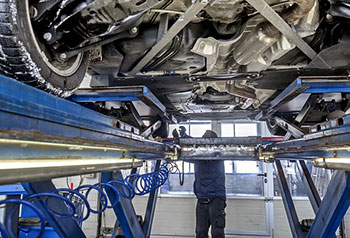
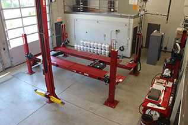
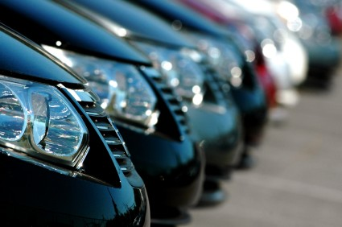

Rely on professionals for repairs on your vehicle. With our attention to detail, we carry out repairs in American , Asian and European mechanics . We repair all components of your automobile or light truck such as engine , steering , suspension , brakes , exhaust system and more.
Our expertise allows us to maintain your automobile and light truck. Entrust us with your car to experience our courteous and professional service.
Recommended preventative maintenance

maintenance is essential to ensure the life of your car. Your vehicle can thus remain more reliable, safe and economical. Garage Pompeo's preventative maintenance program will help keep your car in better shape and longer.We respect the standards of car manufacturers and offer the maintenance recommended by the manufacturers.
Wheel alignment

Ask for your wheels to be aligned after any accident or if you notice abnormal tire wear. It is highly possible that wheel alignment adjustment will be essential after a suspension or steering repair . Have your vehicle's wheel alignment checked at least every 1 year/25,000 km.
Motor and electrical analysis
Dashboard warning lights are increasingly common on modern vehicles. The Garage Pompeo team has state-of-the-art equipment to diagnose faulty injection, electronics, electricity, airbags and computers on your car or light truck. We diagnose electrical and electronic troubles on most vehicles, have your Check Engine Light analyzed here!
vehicle fleet maintenance

Garage Pompeo in Lasalle offers professional maintenance and repair services for commercial and institutional vehicle fleets . Automotive service experts accompany you for general mechanical maintenance and repairs: windshield, auto glass and/or tires and for preventive maintenance recommended by automotive manufacturers.